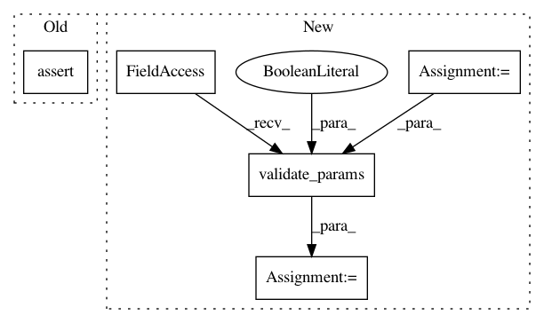

f67e0f54ef3b6b253d29bf8a86c20944ec6bd7b5,tests/test_ops/test_operations.py,TestOperationsConfigs,test_experiment_and_job_refs_params,#TestOperationsConfigs#,353
Before Change
],
}
op = BaseOpConfig.from_dict(config_dict)
assert op.params == config_dict["params"]
def test_op_refs_params(self):
config_dict = {
"params": {"param1": "{{ ops.A.outputs.foo }}", "param9": 13.1},
After Change
],
}
op = BaseOpConfig.from_dict(config_dict)
params = {
"param1": "{{ runs.64332180bfce46eba80a65caf73c5396.outputs.foo }}",
"param2": "{{ runs.0de53b5bf8b04a219d12a39c6b92bcce.outputs.foo }}",
"param9": "wasbs://container@user.blob.core.windows.net/",
"param11": "{{ runs.fcc462d764104eb698d3cca509f34154.outputs.accuracy }}",
}
validated_params = ops_params.validate_params(params=params, inputs=op.inputs, outputs=None, is_template=False)
assert {p.name: p.value for p in validated_params} == {
"param1": "runs.64332180bfce46eba80a65caf73c5396.outputs.foo",
"param2": "runs.0de53b5bf8b04a219d12a39c6b92bcce.outputs.foo",
"param9": "wasbs://container@user.blob.core.windows.net/",
In pattern: SUPERPATTERN
Frequency: 3
Non-data size: 5
Instances
Project Name: polyaxon/polyaxon
Commit Name: f67e0f54ef3b6b253d29bf8a86c20944ec6bd7b5
Time: 2019-09-22
Author: contact@polyaxon.com
File Name: tests/test_ops/test_operations.py
Class Name: TestOperationsConfigs
Method Name: test_experiment_and_job_refs_params
Project Name: polyaxon/polyaxon
Commit Name: f67e0f54ef3b6b253d29bf8a86c20944ec6bd7b5
Time: 2019-09-22
Author: contact@polyaxon.com
File Name: tests/test_ops/test_operations.py
Class Name: TestOperationsConfigs
Method Name: test_param_validation_with_outputs
Project Name: polyaxon/polyaxon
Commit Name: f67e0f54ef3b6b253d29bf8a86c20944ec6bd7b5
Time: 2019-09-22
Author: contact@polyaxon.com
File Name: tests/test_ops/test_operations.py
Class Name: TestOperationsConfigs
Method Name: test_param_validation_with_inputs